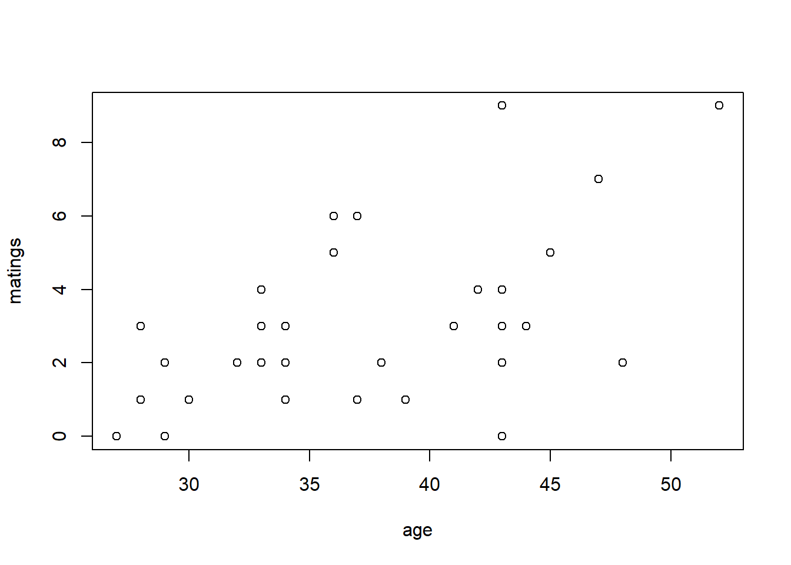
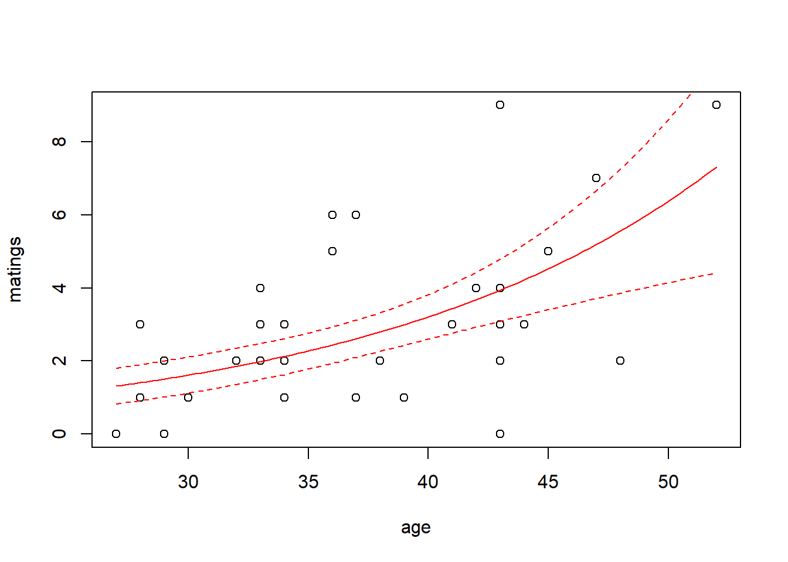
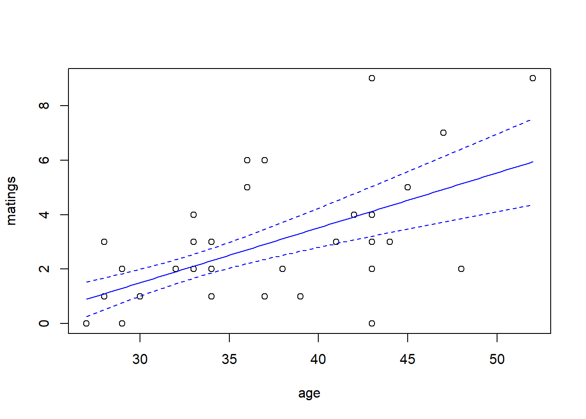
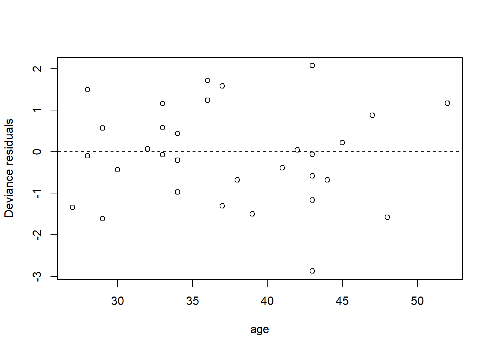
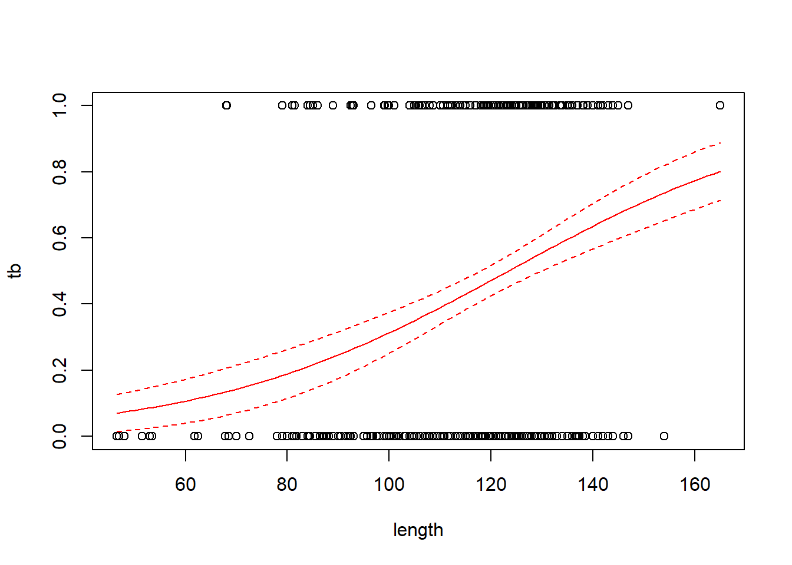
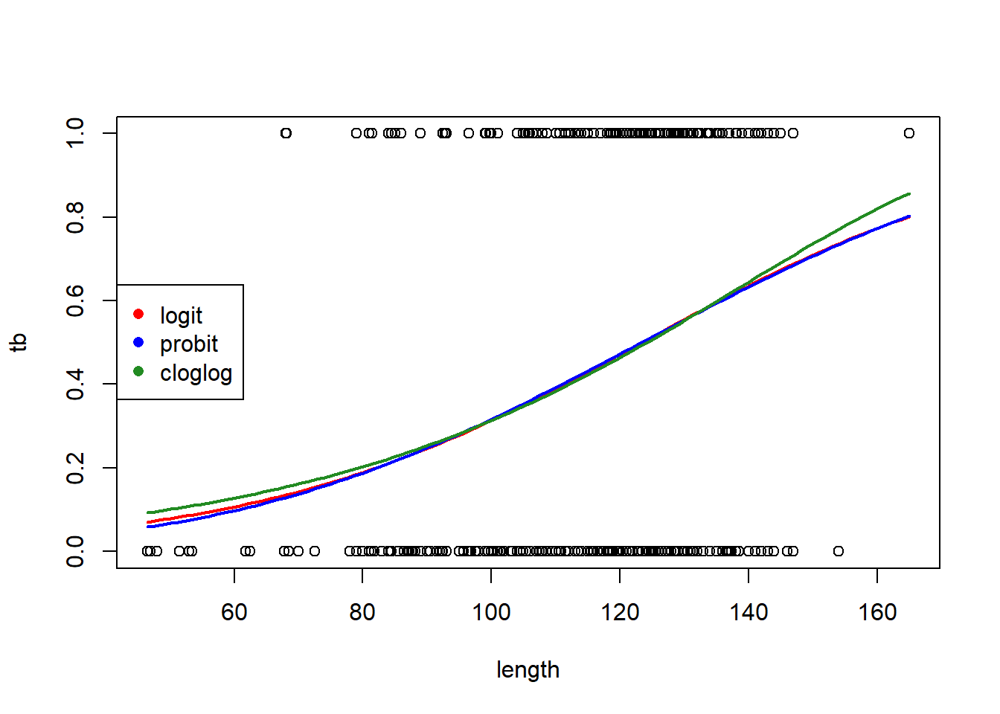
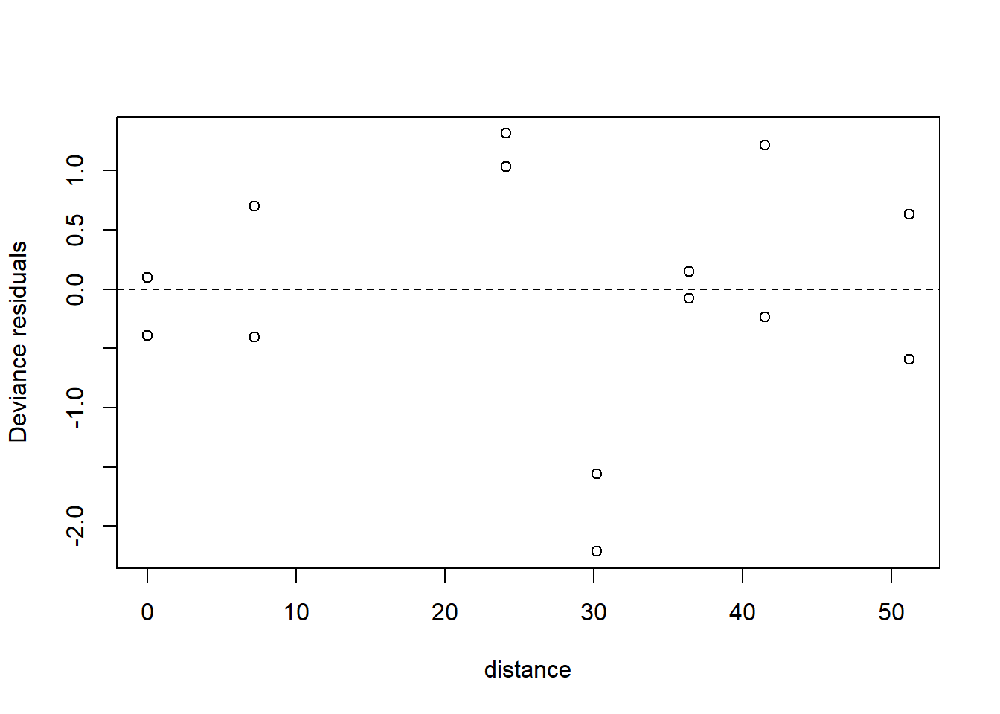

Chapter 4 Generalized linear models
Generalized linear modes extend the machinery of the “general linear model” (regression and ANOVA) to data sets in which the response variable may have a non-Gaussian distribution. Generalized linear models do not encompass all possible distributions for the response variable. Instead, the distribution of the response variable must belong to a group of distributions known as the “exponential family”. (Confusingly, there is also such a thing as an exponential distribution. The exponential distribution is a member of the exponential family, but it is not the only one.) The exponential family of distributions includes many of the distributions that we encounter in practical data analysis, including Poisson, negative binomial, binomial, gamma, and beta distributions. The Gaussian distribution is included in the exponential family as well. One notable distribution that is not part of the exponential family is the \(t\)-distribution. Distributions in the exponential family all give rise to likelihoods that share the same general form, and thus can be handled with a unified fitting scheme.
In practice, logistic regression (with binomial responses) and Poisson regression are far and away the two most common forms of generalized linear models that one encounters.
4.1 Poisson regression
We will begin with an example of Poisson regression. These data are originally from Poole (1989), and were analyzed in Ramsey and Schafer (2012). They describe an observational study of 41 male elephants over 8 years at Amboseli National Park in Kenya. Each record in this data set gives the age of a male elephant at the beginning of a study and the number of successful matings for the elephant over the study’s duration. The number of matings is a count variable. Our goal is to characterize how the number of matings is related to the elephant’s age. We’ll start by fitting a model with the canonical log link.
elephant <- read.table("data/elephant.txt", head = T)
head(elephant)## age matings
## 1 27 0
## 2 28 1
## 3 28 1
## 4 28 1
## 5 28 3
## 6 29 0with(elephant, plot(matings ~ age))
fm1 <- glm(matings ~ age,
family = poisson(link = "log"),
data = elephant) # log link is the default
summary(fm1)##
## Call:
## glm(formula = matings ~ age, family = poisson(link = "log"),
## data = elephant)
##
## Coefficients:
## Estimate Std. Error z value Pr(>|z|)
## (Intercept) -1.58201 0.54462 -2.905 0.00368 **
## age 0.06869 0.01375 4.997 5.81e-07 ***
## ---
## Signif. codes: 0 '***' 0.001 '**' 0.01 '*' 0.05 '.' 0.1 ' ' 1
##
## (Dispersion parameter for poisson family taken to be 1)
##
## Null deviance: 75.372 on 40 degrees of freedom
## Residual deviance: 51.012 on 39 degrees of freedom
## AIC: 156.46
##
## Number of Fisher Scoring iterations: 5Thus the so-called pseudo-\(R^2\) for the model with the log link is \[ \mathrm{pseudo}-R^2 = 1 - \frac{51.012}{75.372} = 32.3\% \] We can visualize the fit by plotting a best-fitting line with a 95% confidence interval. Because the scale parameter is not estimated here, we will use a critical value from a standard normal distribution. Later, when we estimate the scale parameter based on data, we will use a critical value from a \(t\)-distribution instead.
new.data <- data.frame(age = seq(from = min(elephant$age),
to = max(elephant$age),
length = 100))
predict.fm1 <- predict(fm1, newdata = new.data, type = "response", se.fit = TRUE)
with(elephant, plot(matings ~ age))
lines(x = new.data$age, y = predict.fm1$fit, col = "red")
# add lines for standard errors
lines(x = new.data$age,
y = predict.fm1$fit - 1.96 * predict.fm1$se.fit,
col = "red",
lty = "dashed")
lines(x = new.data$age,
y = predict.fm1$fit + 1.96 * predict.fm1$se.fit,
col = "red",
lty = "dashed")
While the canonical link is a natural starting point, we are free to try other link functions as well. Below, we try the identity link and plot the fit.
fm2 <- glm(matings ~ age, family = poisson(link = "identity"), data = elephant)
summary(fm2)##
## Call:
## glm(formula = matings ~ age, family = poisson(link = "identity"),
## data = elephant)
##
## Coefficients:
## Estimate Std. Error z value Pr(>|z|)
## (Intercept) -4.55205 1.33916 -3.399 0.000676 ***
## age 0.20179 0.04023 5.016 5.29e-07 ***
## ---
## Signif. codes: 0 '***' 0.001 '**' 0.01 '*' 0.05 '.' 0.1 ' ' 1
##
## (Dispersion parameter for poisson family taken to be 1)
##
## Null deviance: 75.372 on 40 degrees of freedom
## Residual deviance: 50.058 on 39 degrees of freedom
## AIC: 155.5
##
## Number of Fisher Scoring iterations: 5predict.fm2 <- predict(fm2, newdata = new.data, type = "response", se.fit = TRUE)
with(elephant, plot(matings ~ age))
lines(x = new.data$age, y = predict.fm2$fit, col = "blue")
lines(x = new.data$age,
y = predict.fm2$fit - 1.96 * predict.fm2$se.fit,
col = "blue",
lty = "dashed")
lines(x = new.data$age,
y = predict.fm2$fit + 1.96 * predict.fm2$se.fit,
col = "blue",
lty = "dashed")
Note that the choice of the link function has a substantial impact on the shape of the fit. The canonical (log) link suggests that the average number of matings increases with age at an accelerating rate, while the identity link suggests that the average number of matings increases steadily with age. The AIC favors the identity link here.
We can also have a look at the residuals to see if they suggest any model deficiencies. In general, we prefer the deviance residuals, so we will look at them.
plot(x = elephant$age,
y = residuals(fm2, type = "deviance"),
xlab = "age",
ylab = "Deviance residuals")
abline(h = 0, lty = "dashed")
The residuals do not suggest any deficiency in the fit.
For this fit, the residual deviance suggests a small amount of overdispersion. To be on the safe side, we can fit a quasi-Poisson model in which the scale (overdispersion) parameter is estimated from the data. Note that when we estimate the overdispersion parameter, the estimates of the model parameters do not change, but their standard errors increase. Consequently, the uncertainty in the fit increases as well. In this case, however, the increase is so slight that it is barely noticeable.
fm3 <- glm(matings ~ age, family = quasipoisson(link = "identity"), data = elephant)
summary(fm3)##
## Call:
## glm(formula = matings ~ age, family = quasipoisson(link = "identity"),
## data = elephant)
##
## Coefficients:
## Estimate Std. Error t value Pr(>|t|)
## (Intercept) -4.55205 1.42164 -3.202 0.00272 **
## age 0.20179 0.04271 4.725 2.97e-05 ***
## ---
## Signif. codes: 0 '***' 0.001 '**' 0.01 '*' 0.05 '.' 0.1 ' ' 1
##
## (Dispersion parameter for quasipoisson family taken to be 1.126975)
##
## Null deviance: 75.372 on 40 degrees of freedom
## Residual deviance: 50.058 on 39 degrees of freedom
## AIC: NA
##
## Number of Fisher Scoring iterations: 5predict.fm3 <- predict(fm3, newdata = new.data, type = "response", se.fit = TRUE)
with(elephant, plot(matings ~ age))
lines(x = new.data$age, y = predict.fm3$fit, col = "blue")
lines(x = new.data$age,
y = predict.fm3$fit + qt(0.025, df = 39) * predict.fm3$se.fit,
col = "blue",
lty = "dashed")
lines(x = new.data$age,
y = predict.fm3$fit + qt(0.975, df = 39) * predict.fm3$se.fit,
col = "blue",
lty = "dashed")As an alternative, we could fit a model that uses a negative binomial distribution for the response. Negative binomial distributions belong to the exponential family, so we can fit them using the GLM framework. However, the authors of glm did not include a negative binomial family in their initial code. Venables & Ripley’s MASS package includes a program called glm.nb which is specifically designed for negative binomial responses. MASS::glm.nb uses the parameterization familiar to ecologists, although they use the parameter \(\theta\) instead of \(k\). So, in their notation, if \(y \sim \mathrm{NB}(\mu, \theta)\), then \(\mathrm{Var}(y) = \mu + \mu^2/\theta\).
require(MASS)## Loading required package: MASSfm4 <- glm.nb(matings ~ age, link = identity, data = elephant)
summary(fm4)##
## Call:
## glm.nb(formula = matings ~ age, data = elephant, link = identity,
## init.theta = 15.80269167)
##
## Coefficients:
## Estimate Std. Error z value Pr(>|z|)
## (Intercept) -4.56939 1.45770 -3.135 0.00172 **
## age 0.20232 0.04428 4.569 4.9e-06 ***
## ---
## Signif. codes: 0 '***' 0.001 '**' 0.01 '*' 0.05 '.' 0.1 ' ' 1
##
## (Dispersion parameter for Negative Binomial(15.8027) family taken to be 1)
##
## Null deviance: 64.836 on 40 degrees of freedom
## Residual deviance: 43.214 on 39 degrees of freedom
## AIC: 156.87
##
## Number of Fisher Scoring iterations: 1
##
##
## Theta: 15.8
## Std. Err.: 23.0
##
## 2 x log-likelihood: -150.872predict.fm4 <- predict(fm4, newdata = new.data, type = "response", se.fit = TRUE)
with(elephant, plot(matings ~ age))
lines(x = new.data$age, y = predict.fm4$fit, col = "blue")
lines(x = new.data$age,
y = predict.fm4$fit + 1.96 * predict.fm4$se.fit,
col = "blue",
lty = "dashed")
lines(x = new.data$age,
y = predict.fm4$fit - 1.96 * predict.fm4$se.fit,
col = "blue",
lty = "dashed")Notice that \(\hat{\theta} = 15.8\), again indicating that the extra-Poisson variation is mild. Notice also that the error bounds on the fitted curve are ever so slightly larger than the error bounds from the Poisson fit, and nearly identical to the error bounds from the quasi-Poisson fit.
4.2 Binary responses
We generally distinguish between two types of data with binary responses: Data in which each individual record is a separate a binary response, and data in which each record consists of a group of binary observations. The same methods can be used for either type of data. We will begin by studying a data set with individual binary responses, and then use the industrial melanism data to illustrate grouped binary responses.
4.2.1 Individual binary responses: TB in boar
To illustrate individual binary data, we will use a data set analyzed by Zuur et al. (2009). As explained there, these data describe the incidence of “tuberculosis-like lesions in wild boar Sus scrofa” in southern Spain, and were originally collected by Vicente et al. (2006). The potential explanatory variables in the data set include a measure of the animal’s size, it’s sex, and a grouping into one of four age classes.
Preparatory work:
boar <- read.table("data/boar.txt", head = T)
# remove incomplete records
boar <- na.omit(boar)
# convert sex to a factor
boar$SEX <- as.factor(boar$SEX)
names(boar) <- c("tb", "sex", "age", "length")
summary(boar)## tb sex age length
## Min. :0.0000 1:206 Min. :1.000 Min. : 46.5
## 1st Qu.:0.0000 2:288 1st Qu.:3.000 1st Qu.:107.0
## Median :0.0000 Median :3.000 Median :122.0
## Mean :0.4575 Mean :3.142 Mean :117.3
## 3rd Qu.:1.0000 3rd Qu.:4.000 3rd Qu.:130.4
## Max. :1.0000 Max. :4.000 Max. :165.0We’ll fit the usual logistic regression model first, considering only the animal’s size as a predictor. Size in this case is a measure of the length of the animal, in cm.
fm1 <- glm(tb ~ length, family = binomial(link = "logit"), data = boar)
summary(fm1)##
## Call:
## glm(formula = tb ~ length, family = binomial(link = "logit"),
## data = boar)
##
## Coefficients:
## Estimate Std. Error z value Pr(>|z|)
## (Intercept) -4.137107 0.695381 -5.949 2.69e-09 ***
## length 0.033531 0.005767 5.814 6.09e-09 ***
## ---
## Signif. codes: 0 '***' 0.001 '**' 0.01 '*' 0.05 '.' 0.1 ' ' 1
##
## (Dispersion parameter for binomial family taken to be 1)
##
## Null deviance: 681.25 on 493 degrees of freedom
## Residual deviance: 641.23 on 492 degrees of freedom
## AIC: 645.23
##
## Number of Fisher Scoring iterations: 4with(boar, plot(tb ~ length))
# add a line for the fitted probabilities of tb
new.data <- data.frame(length = seq(from = min(boar$length),
to = max(boar$length),
length = 100))
predict.fm1 <- predict(fm1, newdata = new.data, type = "response", se.fit = TRUE)
lines(x = new.data$length, y = predict.fm1$fit, col = "red")
# add lines for standard errors
# use critical value from z distribution here because
# the scale parameter is not estimated
lines(x = new.data$length,
y = predict.fm1$fit - 1.96 * predict.fm1$se.fit,
col = "red",
lty = "dashed")
lines(x = new.data$length,
y = predict.fm1$fit + 1.96 * predict.fm1$se.fit,
col = "red",
lty = "dashed")
Regression coefficients in logistic regression can be a bit hard to interpret. One interpretation flows from exponentiating the regression coefficient to obtain an odds ratio. For the boar data, the regression coefficient of 0.0335 corresponds to an odds ratio of \(e^{0.0335}\) = 1.034. This means that for two boars that differ by one cm in length, the larger boar’s odds of having a TB-like lesion will be 1.034 times the smaller boar’s odds of having such a lesion.
Overdispersion is typically not an issue with individual binary response data. Nonetheless, the pseudo-\(R^2\) here is fairly low. We can try the probit and complementary log-log links to see if we obtain a better fit:
# probit link
fm1a <- glm(tb ~ length, family = binomial(link = "probit"), data = boar)
# complementary log-log link
fm1b <- glm(tb ~ length, family = binomial(link = "cloglog"), data = boar)
AIC(fm1, fm1a, fm1b)## df AIC
## fm1 2 645.2265
## fm1a 2 645.2665
## fm1b 2 645.6100# make a plot to compare the fits with the different links
predict.fm1a <- predict(fm1a, newdata = new.data, type = "response", se.fit = TRUE)
predict.fm1b <- predict(fm1b, newdata = new.data, type = "response", se.fit = TRUE)
with(boar, plot(tb ~ length))
lines(x = new.data$length, y = predict.fm1$fit, col = "red", lwd = 2)
lines(x = new.data$length, y = predict.fm1a$fit, col = "blue", lwd = 2)
lines(x = new.data$length, y = predict.fm1b$fit, col = "forestgreen", lwd = 2)
legend("left",
leg = c("logit", "probit", "cloglog"),
col = c("red", "blue", "forestgreen"),
pch = 16)
The logit and probit links are nearly identical. The complementary log-log link differs slightly, but the logit link is AIC-best.
Try adding sex and age class as predictors. Some of the MLEs cannot be found, because none of the individuals with and are infected, thus the MLE of the log odds of infection for this group (which happens to be the baseline) is \(-\infty\). This phenomenon is known as “complete separation”.
# fit a model with sex, age (as a categorical predictor) and their interaction
fm2 <- glm(tb ~ length + sex * as.factor(age),
family = binomial,
data = boar)
summary(fm2)##
## Call:
## glm(formula = tb ~ length + sex * as.factor(age), family = binomial,
## data = boar)
##
## Coefficients:
## Estimate Std. Error z value Pr(>|z|)
## (Intercept) -16.55356 724.50177 -0.023 0.982
## length 0.01840 0.01253 1.469 0.142
## sex2 14.19739 724.50190 0.020 0.984
## as.factor(age)2 13.83446 724.50169 0.019 0.985
## as.factor(age)3 14.31136 724.50191 0.020 0.984
## as.factor(age)4 14.68141 724.50219 0.020 0.984
## sex2:as.factor(age)2 -14.53254 724.50204 -0.020 0.984
## sex2:as.factor(age)3 -14.36861 724.50196 -0.020 0.984
## sex2:as.factor(age)4 -14.53354 724.50196 -0.020 0.984
##
## (Dispersion parameter for binomial family taken to be 1)
##
## Null deviance: 681.25 on 493 degrees of freedom
## Residual deviance: 635.43 on 485 degrees of freedom
## AIC: 653.43
##
## Number of Fisher Scoring iterations: 14with(boar, table(tb, age, sex))## , , sex = 1
##
## age
## tb 1 2 3 4
## 0 4 37 37 28
## 1 0 14 34 52
##
## , , sex = 2
##
## age
## tb 1 2 3 4
## 0 7 40 62 53
## 1 2 11 48 65There are several possible remedies here. The first is to try to reduce the number of parameters in the model, perhaps by eliminating the interaction between sex and age class.
# fit a model with sex, age (as a categorical predictor) and their interaction
fm3 <- glm(tb ~ length + sex + as.factor(age),
family = binomial,
data = boar)
summary(fm3)##
## Call:
## glm(formula = tb ~ length + sex + as.factor(age), family = binomial,
## data = boar)
##
## Coefficients:
## Estimate Std. Error z value Pr(>|z|)
## (Intercept) -2.67730 1.07306 -2.495 0.0126 *
## length 0.01959 0.01237 1.584 0.1133
## sex2 -0.24297 0.19354 -1.255 0.2093
## as.factor(age)2 -0.19847 0.92641 -0.214 0.8304
## as.factor(age)3 0.33908 1.06938 0.317 0.7512
## as.factor(age)4 0.59041 1.20582 0.490 0.6244
## ---
## Signif. codes: 0 '***' 0.001 '**' 0.01 '*' 0.05 '.' 0.1 ' ' 1
##
## (Dispersion parameter for binomial family taken to be 1)
##
## Null deviance: 681.25 on 493 degrees of freedom
## Residual deviance: 637.41 on 488 degrees of freedom
## AIC: 649.41
##
## Number of Fisher Scoring iterations: 4A second option is to use so-called ``exact’’ methods for inference. There doesn’t appear to be a good package available for implementing these methods in R. Other software packages might be necessary.
4.2.2 Grouped binary data: Industrial melanism
We’ll start with the standard logistic regression model for the industrial melanism data. We are primarily interested in determining if the effect of color morph on removal rate changes with distance from Liverpool. For grouped binary data, we need to specify both the number of “successes” and number of “failures” as the response variable in the model. Here, we use cbind to create a two-column matrix with the number of “successes” (moths removed) in the first column, and the number of “failures” (moths not removed) in the second column. See the help documentation for glm for more details.
moth <- read.table("data/moth.txt", head = TRUE, stringsAsFactors = TRUE)
fm1 <- glm(cbind(removed, placed - removed) ~ morph * distance,
family = binomial(link = "logit"),
data = moth)
summary(fm1)##
## Call:
## glm(formula = cbind(removed, placed - removed) ~ morph * distance,
## family = binomial(link = "logit"), data = moth)
##
## Coefficients:
## Estimate Std. Error z value Pr(>|z|)
## (Intercept) -1.128987 0.197906 -5.705 1.17e-08 ***
## morphlight 0.411257 0.274490 1.498 0.134066
## distance 0.018502 0.005645 3.277 0.001048 **
## morphlight:distance -0.027789 0.008085 -3.437 0.000588 ***
## ---
## Signif. codes: 0 '***' 0.001 '**' 0.01 '*' 0.05 '.' 0.1 ' ' 1
##
## (Dispersion parameter for binomial family taken to be 1)
##
## Null deviance: 35.385 on 13 degrees of freedom
## Residual deviance: 13.230 on 10 degrees of freedom
## AIC: 83.904
##
## Number of Fisher Scoring iterations: 4Grouped binary data are often overdispersed relative to the variance implied by a binomial distribution. In this case, we would call the overdispersion “extra-binomial” variation. As with count data, we can deal with overdispersion through a quasi-likelihood approach:
fm1q <- glm(cbind(removed, placed - removed) ~ morph * distance,
family = quasibinomial(link = "logit"),
data = moth)
summary(fm1q)##
## Call:
## glm(formula = cbind(removed, placed - removed) ~ morph * distance,
## family = quasibinomial(link = "logit"), data = moth)
##
## Coefficients:
## Estimate Std. Error t value Pr(>|t|)
## (Intercept) -1.128987 0.223104 -5.060 0.000492 ***
## morphlight 0.411257 0.309439 1.329 0.213360
## distance 0.018502 0.006364 2.907 0.015637 *
## morphlight:distance -0.027789 0.009115 -3.049 0.012278 *
## ---
## Signif. codes: 0 '***' 0.001 '**' 0.01 '*' 0.05 '.' 0.1 ' ' 1
##
## (Dispersion parameter for quasibinomial family taken to be 1.270859)
##
## Null deviance: 35.385 on 13 degrees of freedom
## Residual deviance: 13.230 on 10 degrees of freedom
## AIC: NA
##
## Number of Fisher Scoring iterations: 4As with count data, using quasi-likelihood to estimate the scale (or dispersion) parameter increases the estimates of the standard errors of the coefficients by an amount equal to the square root of the estimated scale parameter.
The \(t\)-test of the interaction between color morph and distance indicates that there is a statistically significant difference in how the proportion of moth removes changes over the distance transect between the two color morphs.
plot(x = moth$distance,
y = residuals(fm1q, type = "deviance"),
xlab = "distance",
ylab = "Deviance residuals")
abline(h = 0, lty = "dashed")
The plot of the residuals suggests that we should include a random effect for the sampling station. This makes complete sense. The data for the two color morphs at each station share whatever other characteristics make the station unique, and are thus correlated. To account for this correlation, we need to introduce a random effect for the station. This again gets us into the world of generalized linear mixed models. Before proceeding, we’ll write the model down. Let \(i=1,2\) index the two color morphs, and let \(j = 1, \ldots, 7\) index the stations. Let \(y_{ij}\) be the number of moths removed, let \(n_{ij}\) be the number of moths placed, and let \(x_j\) be the distance of the station from Liverpool. We wish to fit the model \[\begin{align*} y_{ij} & \sim \mathrm{Binom}(p_{ij}, n_{ij})\\ \mathrm{logit}(p_{ij}) & = \eta_{ij} \\ \eta_{ij} & = a_i + b_i x_j + L_j \\ L_j & \sim \mathcal{N}(0, \sigma^2_L) \end{align*}\]
The \(L_j\)’s are our [l]ocation-specific random effects that capture any other station-to-station differences above and beyond the station’s distance from Liverpool. (It turns out that an observation-level random effect does not improve the model, at least as indicated by DIC.) Because this model includes both a random effect for the station and a non-Gaussian response, it is a generalized linear mixed model (GLMM). We postpone our discussion accordingly.
4.3 Implementation in SAS
Donner party was a well-known group of settlers who got stuck in the Sierra Nevada snows in the winter of 1846-47. The Donner party included 45 adults (defined here as individuals at least 15 years of age), of whom only 20 survived the famous winter Grayson (1993). We have a data set that includes age, gender, and fate for all 45 members of the party. The first few records of the data set are:
age gender fate
23 male died
40 female survived
40 male survived
30 male died
28 male died
40 male died
45 female died
...Suppose we want to model the relationship between age, gender, and fate, where age and gender are predictors, and fate is the response. Fate is a binary response because it has only two possible values. Clearly, we can’t use the usual multiple regression model, because the residuals are sure to be severely non-normal.
Our goal is to relate the predictors to the probability of one outcome or the other. The challenge in doing so is that probabilities are constrained to take values between 0 and 1, and are thus awkward to work with mathematically. Instead, we model the log odds of oue outcome for the other. To explain log odds, we first need to explain odds.
uppose that the probability of an event occurring is \(p\). The odds of that event occurring are \[ \mathrm{odds} = \dfrac{p}{1-p} \] The logit, or log odds are simply the natural log of the odds, or \[ \mathrm{logit} = \ln \mathrm{odds} = \ln(\dfrac{p}{1-p}). \]
We can work backwards from log odds or odds to probabilities by inverting the formulas above. Going from log odds to odds is easy: \[ \mathrm{odds} = e^{\mathrm{logit}}. \] Going from odds to probabilities is also easy: \[ p = \dfrac{\mathrm{odds}}{1 + \mathrm{odds}} \]
Now, we can use \[ \mathrm{logit}(p) = \beta_0 + \beta_1 x_1 + \beta_2 x_2 + \ldots, \] which will work just fine.
In SAS, we can fit this model using PROC LOGISTIC:
proc logistic descending;
model fate = age male;
run;
Output:
The LOGISTIC Procedure
Response Profile
Ordered Total
Value fate Frequency
1 survived 20
2 died 25
Probability modeled is fate='survived'.
Analysis of Maximum Likelihood Estimates
Standard Wald
Parameter DF Estimate Error Chi-Square Pr > ChiSq
Intercept 1 3.2304 1.3870 5.4248 0.0199
age 1 -0.0782 0.0373 4.3988 0.0360
male 1 -1.5973 0.7555 4.4699 0.0345
Odds Ratio Estimates
Point 95% Wald
Effect Estimate Confidence Limits
age 0.925 0.860 0.995
male 0.202 0.046 0.890To interpret the SAS output correcty, it is critical to know whether the software is modeling the probability of an individual dying or of an individual surviving. By default, SAS models the probability of the value of the response variable for the first record in the data set. In this case, the first record in the data set is for someone who died, so SAS’s default is to model the probability of dying. There are several ways to override this default. Here, we do so by using the DESCENDING option.
The parameter estimates describe a fitted regression surface on the log odds scale. For example, for individuals of a given gender, increasing age by one year decreases the log odds of survival by 0.078. We will work towards converting this estimate back to something that is easier to interpret. For now, though, recognize that log odds, odds, and probabilities all increase and decrease together, so that the sign of the estimated regression coefficient is meaningful. Here, the sign of the regression coefficient for age tells us that when comparing two people of the same gender, older people are less likely to survive. The sign of the regression coefficient for gender tells us that when comparing two people of the same age, men are less likely to survive than women. Of course, we have yet to determine if these effects are statistically significant.
Example: Calculate the predicted survival probability for a 30-year old man. \[ \begin{align} \mathrm{logit} & = \hat{\beta}_0 + \hat{\beta}_1 \times 30 + \hat{\beta}_2 \times 1 = -0.713 \\ \mathrm{odds} & =e^{-0.713} = 0.49\\ \mathrm{probability} & = 0.49/1.49 = 0.33. \end{align} \]
Sometimes we interpret the logistic regression parameters in terms of the odds ratio. In the logistic regression model, if we hold all other predictors constant and increase the predictor \(x_i\) by 1, then the predicted odds of success are multiplied by the factor \(e^{\beta_i}\). This is called the odds ratio for predictor \(i\), and is computed automatically by the SAS output. SAS also provides 95% CIs for odds ratios.
As an example, suppose we repeated the procedure above to predict the odds of survival for a 31-year old man. We would find that this man’s odds of survival is 0.45. The odds ratio, \(0.45/0.49 = 0.92 = e^{\hat{\beta}_1}\).
SAS reports (estimated) standard errors for each logistic regression parameter as well as Wald \(\chi^2\) tests. The Wald \(\chi^2\) tests are tests of \(H_0: \beta_i = 0\) vs. \(H_a:\beta_i \neq 0\). Wald \(\chi^2\) tests are the analog of Type III \(F\) (or \(t\)-) tests in regression and ANOVA. In the example above, both the effects of age and gender are statistically significant at the 5% level.
Do the Donner party data contain evidence that the effect of age on survival is different for men vs. women? Fit a model with an age-by-gender interaction and determine if the interaction is significant.
proc logistic descending;
model fate = age|male;
run;
Analysis of Maximum Likelihood Estimates
Standard Wald
Parameter DF Estimate Error Chi-Square Pr > ChiSq
Intercept 1 7.2450 3.2046 5.1114 0.0238
age 1 -0.1940 0.0874 4.9289 0.0264
male 1 -6.9267 3.3983 4.1546 0.0415
age*male 1 0.1616 0.0942 2.9385 0.0865Conclusion: There is no evidence that the effect of age depends on gender (\(\chi^2_1 =2.94\), \(p = 0.0865\)).
4.3.1 Complete separation
Consider the following hypothetical data set:
x y
0 fail
1 fail
2 success
3 successThe best-fitting model for these data is one where the success probability is 0 for values of \(x \leq 1\) and the success probability is 1 for values of \(x \geq 2\). On a log odds scale, the log odds should be \(-\infty\) for \(x \leq 1\) and \(+\infty\) for \(x \geq 2\). Thus, on a log odds scale, the best-fitting line is vertical: it has infinite slope and no intercept. Thus, the intercept and slope of the logistic regression fit are impossible to estimate.
This condition is known as complete separation. A similar and equally problematic condition is quasi-complete separation. Complete and quasi-complete separation are easy to detect visually when there is only a single predictor. When there are multiple predictors, (quasi-) complete separation may exist and may not be easy to detect visually. (Quasi-) complete separation is more likely when the ratio of the number of data points to the number of predictors is small.
SAS will tell you when it detects (quasi-) complete separation. When it does, the Wald-tests are unreliable. Instead, exact tests must be used. The syntax for requesting an exact test in PROC LOGISTIC
proc logistic exactonly;
model y = x1 x2;
exact x1 x2;
run;Consult the on-line documentation for details and examples.